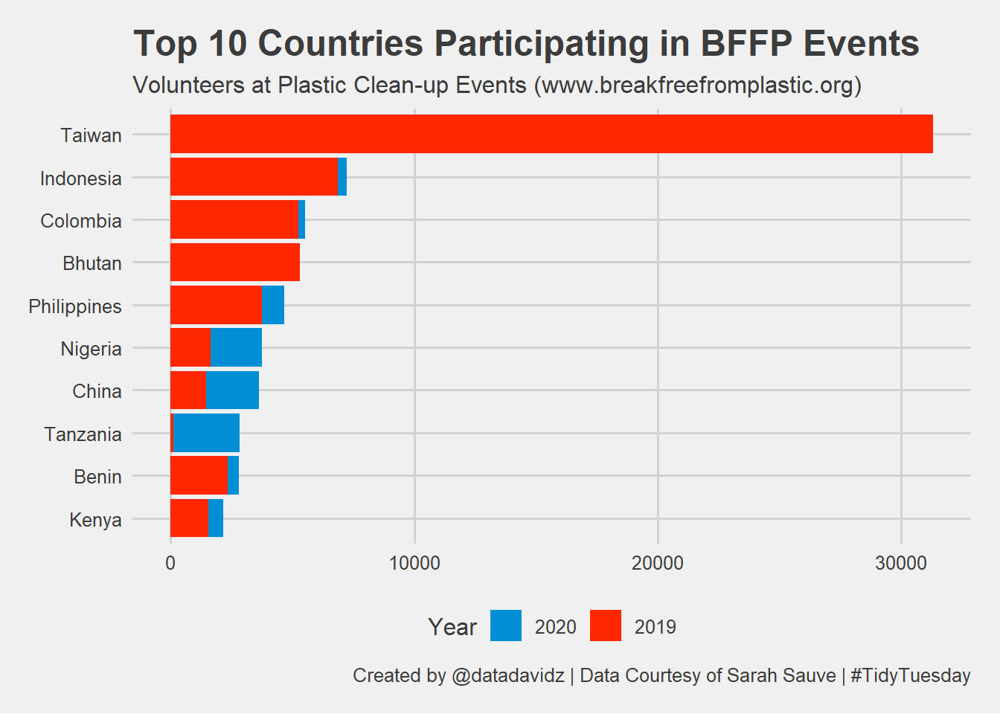

TidyTuesday: Break Free From Plastic Dataset
Posted on January 26, 2021
A quick analysis of the weekly #TidyTuesday dataset organized by the R4DS Online Learning Community. My approach is to apply my data science skills to explore one question I have about the data and generate a visualization that addresses this question. The main purpose for me is to practice and try out new things. I am never completely satisfied with the end result but I do the best I can in a short period of time.
What I learned this week about R and the Tidyverse
- Explored the ggthemes package and used the “fivethirtyeight” theme. I didn’t like the fill colors (too political).
- Unsuccessfully tried to apply fct_lump to aggregated data. Wasn’t appropriate in this case.
Brief explanation of the dataset
The data was from Break Free From Plastic events in 2019 and 2020. The main content of the dataset was the number of participants per country, the amount of plastic collected, the type of plastic and the company that sold the plastic item. My question was: “Which countries had the most participants in these events?” I had never heard of these events in the US.
Wrangle
Initial conclusions from exploring the dataset:
- There are only two years of data: 2019 (9296 entries) and 2020 (4084 entries)
- There are EMPTY country names (1346 entries). Not sure what EMPTY means.
- There is a parent company called “Grand Total” which doesn’t seem to be a company name.
Does Grand Total equal the sum total for a country in 2019?
argentina_sum <- plastics %>%
filter(country == "Argentina", parent_company != "Grand Total") %>%
group_by(country, year) %>%
summarize(across(empty:grand_total, sum)) %>%
ungroup()
argentina_total <- plastics %>%
filter(country == "Argentina", parent_company == "Grand Total") %>%
select(country, year, empty:grand_total)
bind_rows(argentina_sum, argentina_total) %>% arrange(year)
## # A tibble: 3 x 11
## country year empty hdpe ldpe o pet pp ps pvc grand_total
## <chr> <dbl> <dbl> <dbl> <dbl> <dbl> <dbl> <dbl> <dbl> <dbl> <dbl>
## 1 Argentina 2019 0 215 55 607 1376 281 116 18 2668
## 2 Argentina 2019 0 215 55 607 1376 281 116 18 2668
## 3 Argentina 2020 128 132 141 212 144 263 62 4 1086
Yes, parent_company as “Grand Total” was just the sum total for a country in that year.
Clean up the Country Name
plastics <- plastics %>%
mutate(country = str_to_title(country, locale = "en")) %>%
mutate(country = ifelse(country == "Taiwan_ Republic Of China (Roc)", "Taiwan", country))
Visualize
What are the top 10 countries participating in BFFP events?
plastics_subset <- plastics %>%
select(country, year, volunteers) %>%
distinct() %>%
group_by(country) %>%
summarize(total_vols = sum(volunteers), .groups = "drop") %>%
arrange(desc(total_vols))
top_countries <- plastics_subset %>%
slice(1:10) %>%
pull(country)
plastics %>%
left_join(plastics_subset, by = "country") %>%
filter(country %in% top_countries) %>%
select(country, year, volunteers, total_vols) %>%
distinct() %>%
mutate(country = fct_reorder(country, total_vols)) %>%
mutate(year = as_factor(year)) %>%
mutate(year = fct_relevel(year, rev)) %>%
ggplot(aes(x = volunteers, y = country, fill = year)) +
geom_col() +
labs(title = "Top 10 Countries Participating in BFFP Events",
subtitle = "Volunteers at Plastic Clean-up Events (www.breakfreefromplastic.org)",
caption = "Created by @datadavidz | Data Courtesy of Sarah Sauve | #TidyTuesday",
x = "Number of Volunteers",
y = NULL,
fill = "Year") +
theme_fivethirtyeight() +
scale_fill_fivethirtyeight()

Summary
The top countries participating in the events were primarily in the APAC region. Taiwan had a strong participation in 2019 and did not participate in 2020. Not sure what happened but could be related to the pandemic. I liked the “fivethirtyeight” theme but the fill colors of red and blue look too much like the main party affiliations in the US and would probably choose something else next time.
LS0tDQpvdXRwdXQ6IA0KICBodG1sX2RvY3VtZW50Og0KICAgIGNvZGVfZG93bmxvYWQ6IHRydWUNCiAgICBpbmNsdWRlczoNCiAgICAgIGFmdGVyX2JvZHk6IGZvb3Rlci5odG1sDQotLS0NCjxicj4NCmBgYHtyIHNldHVwLCBpbmNsdWRlPUZBTFNFfQ0Ka25pdHI6Om9wdHNfY2h1bmskc2V0KGVjaG8gPSBUUlVFKQ0KYGBgDQoNCiMjICoqVGlkeVR1ZXNkYXk6IEJyZWFrIEZyZWUgRnJvbSBQbGFzdGljIERhdGFzZXQqKg0KKlBvc3RlZCBvbiBKYW51YXJ5IDI2LCAyMDIxKg0KDQpBIHF1aWNrIGFuYWx5c2lzIG9mIHRoZSB3ZWVrbHkgWyNUaWR5VHVlc2RheV0oaHR0cDovL2dpdGh1Yi5jb20vcmZvcmRhdGFzY2llbmNlL3RpZHl0dWVzZGF5KSBkYXRhc2V0IG9yZ2FuaXplZCBieSB0aGUgUjREUyBPbmxpbmUgTGVhcm5pbmcgQ29tbXVuaXR5LiAgTXkgYXBwcm9hY2ggaXMgdG8gYXBwbHkgbXkgZGF0YSBzY2llbmNlIHNraWxscyB0byBleHBsb3JlIG9uZSBxdWVzdGlvbiBJIGhhdmUgYWJvdXQgdGhlIGRhdGEgYW5kIGdlbmVyYXRlIGEgdmlzdWFsaXphdGlvbiB0aGF0IGFkZHJlc3NlcyB0aGlzIHF1ZXN0aW9uLiAgVGhlIG1haW4gcHVycG9zZSBmb3IgbWUgaXMgdG8gcHJhY3RpY2UgYW5kIHRyeSBvdXQgbmV3IHRoaW5ncy4gIEkgYW0gbmV2ZXIgY29tcGxldGVseSBzYXRpc2ZpZWQgd2l0aCB0aGUgZW5kIHJlc3VsdCBidXQgSSBkbyB0aGUgYmVzdCBJIGNhbiBpbiBhIHNob3J0IHBlcmlvZCBvZiB0aW1lLg0KDQpgYGB7ciwgaW5jbHVkZT1GQUxTRX0NCmxpYnJhcnkodGlkeXZlcnNlKQ0KbGlicmFyeShnZ3RoZW1lcykNCg0KdGhlbWVfc2V0KHRoZW1lX21pbmltYWwoKSkNCmBgYA0KDQoqKldoYXQgSSBsZWFybmVkIHRoaXMgd2VlayBhYm91dCBSIGFuZCB0aGUgVGlkeXZlcnNlKioNCg0KKiBFeHBsb3JlZCB0aGUgZ2d0aGVtZXMgcGFja2FnZSBhbmQgdXNlZCB0aGUgImZpdmV0aGlydHllaWdodCIgdGhlbWUuICBJIGRpZG4ndCBsaWtlIHRoZSBmaWxsIGNvbG9ycyAodG9vIHBvbGl0aWNhbCkuDQoqIFVuc3VjY2Vzc2Z1bGx5IHRyaWVkIHRvIGFwcGx5IGZjdF9sdW1wIHRvIGFnZ3JlZ2F0ZWQgZGF0YS4gIFdhc24ndCBhcHByb3ByaWF0ZSBpbiB0aGlzIGNhc2UuDQoNCioqQnJpZWYgZXhwbGFuYXRpb24gb2YgdGhlIGRhdGFzZXQqKg0KDQpUaGUgZGF0YSB3YXMgZnJvbSBCcmVhayBGcmVlIEZyb20gUGxhc3RpYyBldmVudHMgaW4gMjAxOSBhbmQgMjAyMC4gIFRoZSBtYWluIGNvbnRlbnQgb2YgdGhlIGRhdGFzZXQgd2FzIHRoZSBudW1iZXIgb2YgcGFydGljaXBhbnRzIHBlciBjb3VudHJ5LCB0aGUgYW1vdW50IG9mIHBsYXN0aWMgY29sbGVjdGVkLCB0aGUgdHlwZSBvZiBwbGFzdGljIGFuZCB0aGUgY29tcGFueSB0aGF0IHNvbGQgdGhlIHBsYXN0aWMgaXRlbS4gIE15IHF1ZXN0aW9uIHdhczogIldoaWNoIGNvdW50cmllcyBoYWQgdGhlIG1vc3QgcGFydGljaXBhbnRzIGluIHRoZXNlIGV2ZW50cz8iICBJIGhhZCBuZXZlciBoZWFyZCBvZiB0aGVzZSBldmVudHMgaW4gdGhlIFVTLg0KDQpgYGB7ciBMb2FkLCBpbmNsdWRlID0gRkFMU0V9DQojU2F2ZSBuZWVkZWQgZGF0YSBpbnRvIHJkcyBmb3IgYmxvZyBwb3N0DQpwbGFzdGljcyA8LSByZWFkUkRTKGZpbGUgPSAiLi9kYXRhL3R0XzIxMDEyNi5yZHMiKQ0KYGBgDQojIyMgV3JhbmdsZQ0KDQpJbml0aWFsIGNvbmNsdXNpb25zIGZyb20gZXhwbG9yaW5nIHRoZSBkYXRhc2V0Og0KDQoqIFRoZXJlIGFyZSBvbmx5IHR3byB5ZWFycyBvZiBkYXRhOiAyMDE5ICg5Mjk2IGVudHJpZXMpIGFuZCAyMDIwICg0MDg0IGVudHJpZXMpDQoqIFRoZXJlIGFyZSBFTVBUWSBjb3VudHJ5IG5hbWVzICgxMzQ2IGVudHJpZXMpLiAgTm90IHN1cmUgd2hhdCBFTVBUWSBtZWFucy4NCiogVGhlcmUgaXMgYSBwYXJlbnQgY29tcGFueSBjYWxsZWQgIkdyYW5kIFRvdGFsIiB3aGljaCBkb2Vzbid0IHNlZW0gdG8gYmUgYSBjb21wYW55IG5hbWUuDQoNCkRvZXMgR3JhbmQgVG90YWwgZXF1YWwgdGhlIHN1bSB0b3RhbCBmb3IgYSBjb3VudHJ5IGluIDIwMTk/DQpgYGB7ciBXcmFuZ2xlLCBtZXNzYWdlPUZBTFNFfQ0KYXJnZW50aW5hX3N1bSA8LSBwbGFzdGljcyAlPiUgDQogIGZpbHRlcihjb3VudHJ5ID09ICJBcmdlbnRpbmEiLCBwYXJlbnRfY29tcGFueSAhPSAiR3JhbmQgVG90YWwiKSAlPiUNCiAgZ3JvdXBfYnkoY291bnRyeSwgeWVhcikgJT4lIA0KICBzdW1tYXJpemUoYWNyb3NzKGVtcHR5OmdyYW5kX3RvdGFsLCBzdW0pKSAlPiUNCiAgdW5ncm91cCgpDQoNCmFyZ2VudGluYV90b3RhbCA8LSBwbGFzdGljcyAlPiUNCiAgZmlsdGVyKGNvdW50cnkgPT0gIkFyZ2VudGluYSIsIHBhcmVudF9jb21wYW55ID09ICJHcmFuZCBUb3RhbCIpICU+JQ0KICBzZWxlY3QoY291bnRyeSwgeWVhciwgZW1wdHk6Z3JhbmRfdG90YWwpDQoNCmJpbmRfcm93cyhhcmdlbnRpbmFfc3VtLCBhcmdlbnRpbmFfdG90YWwpICU+JSBhcnJhbmdlKHllYXIpDQpgYGANClllcywgcGFyZW50X2NvbXBhbnkgYXMgIkdyYW5kIFRvdGFsIiB3YXMganVzdCB0aGUgc3VtIHRvdGFsIGZvciBhIGNvdW50cnkgaW4gdGhhdCB5ZWFyLg0KDQoNCkNsZWFuIHVwIHRoZSBDb3VudHJ5IE5hbWUNCmBgYHtyfQ0KcGxhc3RpY3MgPC0gcGxhc3RpY3MgJT4lDQogIG11dGF0ZShjb3VudHJ5ID0gc3RyX3RvX3RpdGxlKGNvdW50cnksIGxvY2FsZSA9ICJlbiIpKSAlPiUNCiAgbXV0YXRlKGNvdW50cnkgPSBpZmVsc2UoY291bnRyeSA9PSAiVGFpd2FuXyBSZXB1YmxpYyBPZiBDaGluYSAoUm9jKSIsICJUYWl3YW4iLCBjb3VudHJ5KSkNCmBgYA0KDQojIyMgVmlzdWFsaXplDQoNCldoYXQgYXJlIHRoZSB0b3AgMTAgY291bnRyaWVzIHBhcnRpY2lwYXRpbmcgaW4gQkZGUCBldmVudHM/DQoNCmBgYHtyIHZpc3VhbGl6ZX0NCnBsYXN0aWNzX3N1YnNldCA8LSBwbGFzdGljcyAlPiUNCiAgc2VsZWN0KGNvdW50cnksIHllYXIsIHZvbHVudGVlcnMpICU+JQ0KICBkaXN0aW5jdCgpICU+JQ0KICBncm91cF9ieShjb3VudHJ5KSAlPiUNCiAgc3VtbWFyaXplKHRvdGFsX3ZvbHMgPSBzdW0odm9sdW50ZWVycyksIC5ncm91cHMgPSAiZHJvcCIpICU+JQ0KICBhcnJhbmdlKGRlc2ModG90YWxfdm9scykpDQogIA0KdG9wX2NvdW50cmllcyA8LSBwbGFzdGljc19zdWJzZXQgJT4lIA0KICBzbGljZSgxOjEwKSAlPiUNCiAgcHVsbChjb3VudHJ5KQ0KDQpwbGFzdGljcyAlPiUNCiAgbGVmdF9qb2luKHBsYXN0aWNzX3N1YnNldCwgYnkgPSAiY291bnRyeSIpICU+JQ0KICBmaWx0ZXIoY291bnRyeSAlaW4lIHRvcF9jb3VudHJpZXMpICU+JQ0KICBzZWxlY3QoY291bnRyeSwgeWVhciwgdm9sdW50ZWVycywgdG90YWxfdm9scykgJT4lDQogIGRpc3RpbmN0KCkgJT4lDQogIG11dGF0ZShjb3VudHJ5ID0gZmN0X3Jlb3JkZXIoY291bnRyeSwgdG90YWxfdm9scykpICU+JQ0KICBtdXRhdGUoeWVhciA9IGFzX2ZhY3Rvcih5ZWFyKSkgJT4lDQogIG11dGF0ZSh5ZWFyID0gZmN0X3JlbGV2ZWwoeWVhciwgcmV2KSkgJT4lDQogIGdncGxvdChhZXMoeCA9IHZvbHVudGVlcnMsIHkgPSBjb3VudHJ5LCBmaWxsID0geWVhcikpICsNCiAgZ2VvbV9jb2woKSArDQogIGxhYnModGl0bGUgPSAiVG9wIDEwIENvdW50cmllcyBQYXJ0aWNpcGF0aW5nIGluIEJGRlAgRXZlbnRzIiwNCiAgICAgICBzdWJ0aXRsZSA9ICJWb2x1bnRlZXJzIGF0IFBsYXN0aWMgQ2xlYW4tdXAgRXZlbnRzICh3d3cuYnJlYWtmcmVlZnJvbXBsYXN0aWMub3JnKSIsDQogICAgICAgY2FwdGlvbiA9ICJDcmVhdGVkIGJ5IEBkYXRhZGF2aWR6IHwgRGF0YSBDb3VydGVzeSBvZiBTYXJhaCBTYXV2ZSB8ICNUaWR5VHVlc2RheSIsDQogICAgICAgeCA9ICJOdW1iZXIgb2YgVm9sdW50ZWVycyIsDQogICAgICAgeSA9IE5VTEwsDQogICAgICAgZmlsbCA9ICJZZWFyIikgKw0KICB0aGVtZV9maXZldGhpcnR5ZWlnaHQoKSArDQogIHNjYWxlX2ZpbGxfZml2ZXRoaXJ0eWVpZ2h0KCkNCmBgYA0KDQojIyMgU3VtbWFyeQ0KDQpUaGUgdG9wIGNvdW50cmllcyBwYXJ0aWNpcGF0aW5nIGluIHRoZSBldmVudHMgd2VyZSBwcmltYXJpbHkgaW4gdGhlIEFQQUMgcmVnaW9uLiAgVGFpd2FuIGhhZCBhIHN0cm9uZyBwYXJ0aWNpcGF0aW9uIGluIDIwMTkgYW5kIGRpZCBub3QgcGFydGljaXBhdGUgaW4gMjAyMC4gIE5vdCBzdXJlIHdoYXQgaGFwcGVuZWQgYnV0IGNvdWxkIGJlIHJlbGF0ZWQgdG8gdGhlIHBhbmRlbWljLiAgSSBsaWtlZCB0aGUgImZpdmV0aGlydHllaWdodCIgdGhlbWUgYnV0IHRoZSBmaWxsIGNvbG9ycyBvZiByZWQgYW5kIGJsdWUgbG9vayB0b28gbXVjaCBsaWtlIHRoZSBtYWluIHBhcnR5IGFmZmlsaWF0aW9ucyBpbiB0aGUgVVMgYW5kIHdvdWxkIHByb2JhYmx5IGNob29zZSBzb21ldGhpbmcgZWxzZSBuZXh0IHRpbWUuDQo=